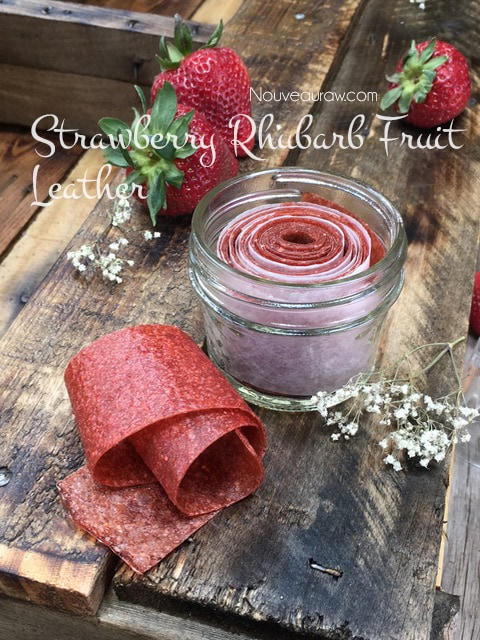

Fruit Leather Recipe Template

Fruit leathers are homemade fruit rolls. They are a tasty, chewy, dried fruit product. Fruit leathers are made by pouring puréed fruit onto a flat surface for drying. When dried, the fruit is pulled from the surface and rolled. It gets the name “leather” from the fact that when the puréed fruit is dried, it is shiny and has the texture of leather.
The advantages of making fruit leathers are to use less sugar, mix fruit flavors to your liking, and to control the quality of fruits being used.
They are a great tasting, healthy snack that can be easily made with a food dehydrator. Homemade leathers are wholesome, 100% fruit snacks that are incredibly easy and fun to make.
Store bought roll-ups are overprocessed, overpriced, and are imitation fruit products that include extra sugars, corn syrups, and trans fats as ingredients.
Here is a listing of the primary ingredients from a well-known brand of a fruit roll up product: Fruit from Concentrate, Corn Syrup, Dried Corn Syrup, Sugar, and Partially Hydrogenated Cottonseed Oil. There isn’t a need for such products to go into fruit leathers!
Tips for making the best homemade fruit leather:
Select:
- Select RIPE or slightly overripe fruit that has reached a peak in color, texture, and flavor.
Prepare:
- Prepare the fruit; wash, dry, remove stems, pits, seeds and so forth.
- Remove the skins if desired and any bruised areas.
Purée:
- Purée the fruit in your blender or food processor until smooth.
- Taste and sweeten if needed. Keep in mind that flavors will concentrate as they dehydrate.
- When adding a sweetener do so 1 tbsp at a time, and reblend, tasting until it is at the desired taste.
- It is best to use a liquid type sweetener such as raw honey. Don’t use granulated sugar because it tends to change the texture of the finished fruit leather.
Problem Solving:
- Too thick: The purée for the fruit leather is too thick (won’t pour easily). Add fruit juice or water, a little at a time until you achieve the right consistency. Also, you can add other fruits that are higher in water content.
- Too thin: The purée for the fruit leather is too thin (too runny). Mix with fruits that have a lower water content such as banana (make a thicker purée), or add 1 Tbsp at a time of ground chia seeds. Juicy fresh fruits, such as strawberries, can be too runny to create a thick, chewy leather like the commercial types. By adding a banana when puréeing, the mixture will become thick, and the fruit leather will be as well. Be sure to pour 3/4 to 1 cup of purée on each tray and allow it to spread out. Remember, the poured purée should be 1/4” thick at the edges.
- Discolored: The fruit leather is discolored. Many fruits will discolor as they dry. It doesn’t affect the taste, only the appearance. To make fruit leather that doesn’t discolor, you can add a little lemon juice to the purée. Add about 2 tsp per 2 cups of purée.
Spices to Try:
- Allspice, cinnamon, cloves, coriander, ginger, mace, mint, nutmeg, or pumpkin pie spice. Use sparingly, start with 1/8 teaspoon for every two cups of purée.
Flavorings to Try:
- Almond extract, lemon juice, lemon peel, lime juice, lime peel, orange extract, orange juice, orange peel, or vanilla extract. Use sparingly, try 1/8 to 1/4 teaspoon for every two cups of purée.
Extender:
- Applesauce can be dried alone or added to any fresh fruit purée as an extender. It decreases tartness and makes the leather smoother and more pliable.
Delicious Additions to Try:
- Shredded coconut, chopped dates, other dried chopped fruits, granola, chopped nuts, chopped raisins, poppy seeds, sesame seeds, or sunflower seeds. These can be sprinkled on top for added texture.
Spreading the fruit:
- Pour the fruit purée in the center of a nonstick sheet that comes with the dehydrator. Let gravity spread it out, giving it a little shimmy at the end to settle it down.
- Do not use wax paper or aluminum foil; it will stick. If you don’t have the nonstick sheets, use parchment paper.
- Pour the mixture to create an even depth of 1/4 inch.
- When spreading the purée on the liner, allow about an inch of space between the mixture and the outside edge.
- The fruit leather mixture will spread out as it dries, so it needs a little room to allow for this expansion.
Dehydrate:
- Dehydrate the fruit leather at 145 degrees for 1 hour, then reduce to 115 degrees (F) for about 16 (+/-) hours. The finished consistency should be pliable and easy to roll.
- Check for dark spots on top of the fruit leather. If dark spots can be seen it is a sign that the fruit leather is not completely dry.
- Press down on the fruit leather with a finger. If no indentation is visible or if it is no longer tacky to the touch, the fruit leather is dry and can be removed from the dehydrator.
- Peel the leather from the dehydrator trays or parchment paper.
- If the fruit leather peels away easily and holds its shape after peeling, it is dry.
- If it is still sticking or loses its shape after peeling, it needs further drying.
- Under-dried fruit leather will not keep; it will mold. Over-dried fruit leather will become hard and crack, although it will still be edible and will keep for a long time
Storage:
- Allow the leather to cool before wrapping up to avoid moisture from forming, thus giving it a breeding ground for molds.
- Roll them up and wrap tightly with plastic wrap.
- Place in an air-tight container, and store in a dry, dark place. (Light will cause the fruit leather to discolor.)
- The fruit leather will keep at room temperature for approximately one month, or in a freezer for up to one year.
© AmieSue.com